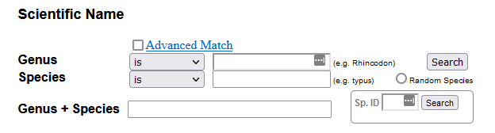

Forests of the Future Week 5 Assignment
Getting started with Species Distribution Modelling
Species Distribution Modelling is fundamentally an exercise in predicting the occurrence or abundance of a species (or species`) using environmental variables and / or species traits. Collectively these ‘predictor’ variables are know as features in Machine Learning lingo.
Setup
The following code loads the packages you will need for this
assignment, and the dataset you will be using (and clears the
workspace). You will be using a dataset on reef fishes from reefs around
the world called RF_abund. Don’t forget to always click
‘Run Code’ for each code box, which runs your code in RStudio, and
allows you to access the results in later code boxes.
rm(list = ls())
library(fofpack)
library(tidyverse)
library(tidymodels)
data("RF_abund")Before we do anything else we will transform our abundance variable,
because abundance usually has better properties for modelling when it is
log-transformed. Note the + 1 below deals with values that
are zero (log is undefined in this case).
RF_abund <- RF_abund %>%
mutate(log_Abundance = log(AbundanceAdult40 + 1))Use the code boxes below each exercise and follow the directions.
Exercise 1
Make a data.frame with 5 random fish species from
RF_abund. Just fill in the blank.
rand_fish <- RF_abund %>%
select(SpeciesName) %>%
slice_sample(n = ___)
rand_fishCopy and paste one of the above species names into Fishbase, using the scientific name section (look for Genus + Species), it looks like this: 
Have a look at some pictures and get to know your chosen species. You will model this species distribution across different temperatures.
Put the scientific name in a character object called
mysp.
mysp <- "___"Exercise 2
First filter the RF_abund dataframe to just your chosen
species (mysp). Call it mysp_dat. Fill in the
blank. As a reminder, here are the column names of
RF_abund:
names(RF_abund)## [1] "SpeciesName" "SiteCode" "AbundanceAdult40"
## [4] "SamplingIntensity" "MeanTemp_CoralWatch" "MinTemp_CoralWatch"
## [7] "MaxTemp_CoralWatch" "SDTemp_CoralWatch" "ECOregion"
## [10] "Presence" "OLRE" "MaxAbundance"
## [13] "N_Obs" "Confidence_NObs" "T_Range_Obs"
## [16] "Confidence_TRange_Obs" "N_Absences_T_Upper" "N_Absences_T_Lower"
## [19] "Confidence_Occ_Tupper" "Confidence_Occ_Tlower" "T_Upper_Absences"
## [22] "T_Lower_Absences" "T_Mean_Absences" "NEOLI"
## [25] "Depth_Site"mysp_dat <- RF_abund %>%
filter(___ == mysp)Now plot MeanTemp_CoralWatch on the x axis, and
log_Abundance on the y axis, using ggplot2
ggplot(mysp_dat, aes(x = ___, y = ___)) +
geom_point() +
theme_minimal()Exercise 3
Run a linear model to estimate how the species’ abundance
(log_Abundance) responds to mean temperature
(MeanTemp_CoralWatch). Start by making a formula and assign
it to an object called form. Then run the model using
tidymodels, assigning the result to mysp_mod.
The left hand side is the variable you want to predict (the response).
The right hand side the variable you want to use to predict with (the
predictor)
form <- ___ ~ ___
mysp_mod <- linear_reg() %>%
fit(form,
data = mysp_dat)
tidy(mysp_mod)Use the above model object to generate predictions for your species
at each of the original data points. Assign this to an object called
mysp_preds
mysp_preds <- predict(mysp_mod, mysp_dat)Run the following code to bind your predictions to the original data:
mysp_dat_preds <- mysp_dat %>%
bind_cols(mysp_preds)
mysp_dat_predsUse the mysp_dat_pred to plot the model predictions
alongside the observed data. Replace the blank with the correct
ggplot2 code to plot the predictions.
ggplot(mysp_dat_preds, aes(MeanTemp_CoralWatch, log_Abundance)) +
___ +
geom_point() +
theme_minimal()Just for fun
This section is not for marks, but shows you some more advanced stuff you can do for modelling your species. The section after this has a bonus exercise if you want to try something a bit harder for bonus marks!
The linear model probably didn’t fit your species’ data very well
(but it is possible that it did!). It is usually more effective to model
species abundances as a nonlinear function of the environment. There are
many advanced machine learning algorithms devoted to complex nonlinear
function fitting, but did you know you can model nonlinear relationships
with the linear model? It sounds counterintuitive, but it works by
creating new synthetic variables, that, when added each in a linear
fashion, combine to produce a nonlinear global relationship. This can be
achieved in R using the poly() function, which creates
‘polynomial’ variables. For a single variable it produces new variables
based on the original variable raised to multiple powers (and then made
‘orthogonal’).
Let’s try it! Run the code below to run a ‘polynomial’ regression on your species:
form_poly <- log_Abundance ~ poly(MeanTemp_CoralWatch, degree = 3)
mysp_mod_poly <- linear_reg() %>%
fit(form_poly,
data = mysp_dat)
tidy(mysp_mod_poly)Now run the following to make a plot of the predictions. Here we predict on a sequence of predictor values to make a smooth prediction line across the full range of predictor values.
pred_dat <- tibble(MeanTemp_CoralWatch = seq(min(mysp_dat$MeanTemp_CoralWatch),
max(mysp_dat$MeanTemp_CoralWatch),
length.out = 1000)) %>%
bind_cols(predict(mysp_mod_poly, .))
ggplot(pred_dat, aes(MeanTemp_CoralWatch, .pred)) +
geom_point(aes(y = log_Abundance), data = mysp_dat) +
geom_line() +
ylim(c(0, NA)) +
theme_minimal()
## plot just the predictions to see the curve easier:
ggplot(pred_dat, aes(MeanTemp_CoralWatch, .pred)) +
geom_line() +
ylim(c(0, NA)) +
theme_minimal()How does the fit compare to your original linear model?
Advanced Bonus Exercise
The following exercise is for those who want to try something more advanced for a bonus 2 marks. First we run a model with two variables instead of one.
## Note the * means to 'cross' the variables, which means put their individual effects in the model
## plus an 'interaction' between them.
form_2 <- log_Abundance ~ MeanTemp_CoralWatch * Depth_Site
mysp_mod_2 <- linear_reg() %>%
fit(form_2,
data = mysp_dat)
tidy(mysp_mod_2)We can plot the original data points for the two predictors, and then plot the third dimension (the response, in this case abundance) using size. The below code does that.
ggplot(mysp_dat, aes(MeanTemp_CoralWatch, Depth_Site)) +
geom_point(aes(size = log_Abundance)) +
scale_size_area() +
theme_minimal()Now we can make a new dataframe with a ‘grid’ of predictor values to
make prediction on. This uses cross_df from
tidyverse which ‘crosses’ two vector with each other,
making all combinations.
pred_dat_2 <- cross_df(list(MeanTemp_CoralWatch = seq(min(mysp_dat$MeanTemp_CoralWatch),
max(mysp_dat$MeanTemp_CoralWatch),
length.out = 100),
Depth_Site = seq(min(mysp_dat$Depth_Site),
max(mysp_dat$Depth_Site),
length.out = 100)))
pred_dat_2Use the pred_dat_2 dataframe to generate predictions
from the model at each predictor grid point and then bind the prediction
back to the pred_dat_2 dataframe. Then use this to plot the
predictions along with the data.
Hint: After binding the predictions back to
pred_dat_2, for the plot use:
ggplot(pred_dat_2, aes(MeanTemp_CoralWatch, Depth_Site)) +
___ +
geom_point(aes(size = log_Abundance), data = mysp_dat) +
scale_size_area() +
theme_minimal()Replace the ___ with geom_contour_filled()
or geom_tile(). Look at the documentation to see how they
work (or Google them if you prefer). You will have to map the
.pred variable to an aesthetic within it.
Submit
Once you have completed the assignment to your satisfaction, please click the ‘generate’ button below. This will create a text code that you can copy and paste into the assignment text submission form on canvas, and which I can use to regenerate your answers. Please make sure you copy the entire code. The easiest way is to click the copy button in at the top right. This will copy the entire code to the clipboard.
Decode
Submission: